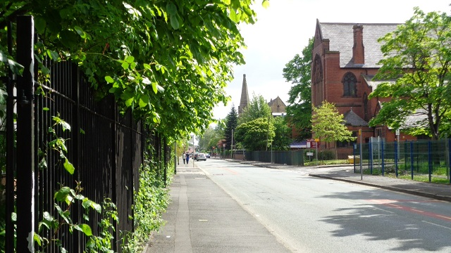

Greenville, a wonderful Texas town.

Greenville was founded in 1846. The city was named after Thomas J. Green, a significant contributor to the establishment of Texas as a Republic. He later became a member of the Congress of the Republic of Texas. The city was almost named “Pinckneyville” in honor of James Pinckney Henderson, the first Governor of Texas.
As the Civil War loomed, Greenville was divided over the issue of secession, as were several area towns and counties. Greenville attorney and State Senator Martin D. Hart was a prominent Unionist. He formed a company of men who fought for the Union in Arkansas, even as other Greenville residents fought for the Confederacy. The divided nature of Greenville, Hunt County and the State of Texas is noted by an historical marker in "The SPOT" Park at 2800 Lee Street in downtown Greenville. In the post-Civil War era, Greenville's economy became partly dependent on cotton as the local economy entered a period of transition.
With a population of 12,384 in the 1920 census, the city, at one time, was the 20th largest in Texas.
In World War II, the Mexican Escuadrón 201 was stationed in Greenville while training at nearby Majors Field.
The town was also notorious for a large sign, installed on July 7, 1921 over Lee Street, the main street in the downtown district, between the train station and the bus station in the 1920s to 1960s. The sign read: "Welcome to Greenville, The Blackest Land, The Whitest People." According to history teacher Paul E. Sturdevant of Greenville, the original intent behind "the whitest people" was to define "the citizens of Greenville as friendly, trustworthy and helpful was sincere, and it was meant to include all citizens, regardless of race." In pre-civil rights America, the phrase "That's mighty white of you" meant that you were honest, not like suspect blacks. The sign thus acquired racial overtones, and the original sign was taken down and placed into storage on April 13, 1965, possibly at the urging of Texas Governor John Connally, who had made a visit to the town weeks before. In 1968, Greenville Sybil Maddux had the sign reinstalled, with the wording modified to read "The Greatest People"; the original sign is in the collection of the Audie Murphy American Cotton Museum.